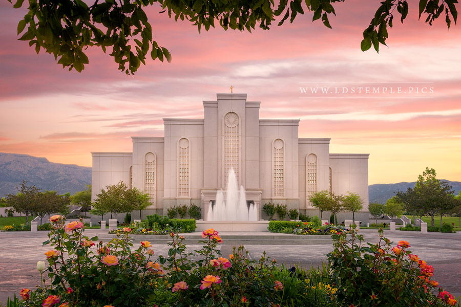

Home

Albuquerque New Mexico Temple
Dallas Texas Temple
Draper Utah Temple
Fort Collins Colorado Temple
Indianapolis Indiana Temple
Los Angeles California Temple
 Ogden Utah Temple
Ogden Utah Temple (Historic)
Salt Lake Temple
Seattle Washington Temple
Ogden Utah Temple
Ogden Utah Temple (Historic)
Salt Lake Temple
Seattle Washington Temple